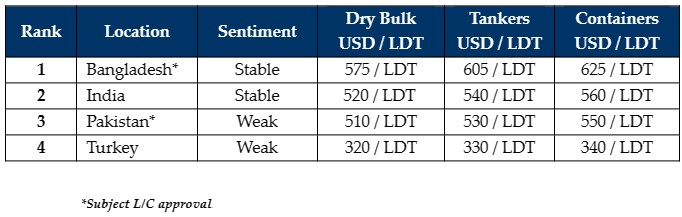

inWeekly Demolition Reports26/06/2023

After last week’s positive news surrounding Bangladesh’s ratification of the Hong Kong Convention, it hasbeen a comparatively muted week in terms of sentiments, sales, and activity, especially as financial constraints continue to hamper the efforts of Chattogram Buyers in keeping domestic yards busy / occupied, especially as new construction and infrastructure projects look to be initiated in the country post-Budget.
Earlier this year, we had witnessed severe difficulties in Bangladesh with the government focusing only on essential items for the expenditure of its dwindling U.S. Dollar reserves – reportedly food, fuel, and fertilizers. It appears that post-budget, Chattogram (and the ship recycling market at large) will once again have difficulties in obtaining L/C approvals on incoming vessels and it is likely to be a quieter summer for this market as a result.
As we also tend to see a traditionally quieter summer / monsoon season, it is undoubtedly turning out to be particularly challenging time for Bangladeshi Recyclers this time around, as most end users are already struggling to obtain financing on units and have therefore abstained from the offering for another week.
The onset of Eid holidays and celebrations has also not assisted the current situation as many labourers and office staff head back to hometowns for several weeks (even though Eid holidays end on 1 July) while nearly all of the yards virtually close and activity subsides over the rainy season (especially in Bangladesh and India).
In the far end on the West, Turkish Recyclers turn increasingly frustrated on that Lira that has been in freefall for 18 months now and has weakened by a nearly catastrophic 200% during this time.
As such, the sales board for the overall industry remains bleak for another week and any Owners or Cash Buyers with tonnage to sell have certainly become frustrated with a lack of overall appetite, weak(ish) prices and an willingness to buy from the various recycling destinations.
For week 25 of 2023, GMS demo rankings / pricing for the week are as below.

📄 Download PDF: Ship-recycling-market-insight-week-25-2023-Sales-Stifled.pdfSource: GMS,Inc. ,https://www.gmsinc.net/gms_new/index.php/web